Raquel Rennó compartilhou as imagens do Flickr da Paula, e as abaixo, feitas por ela durante o Pixelache 2013.
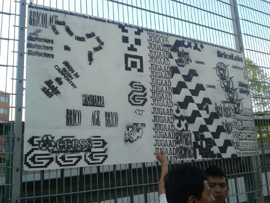
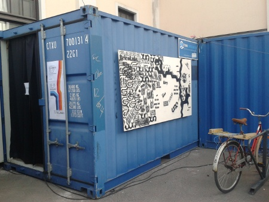

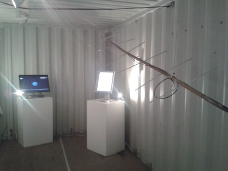


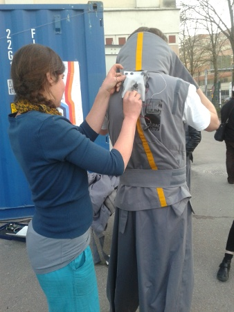
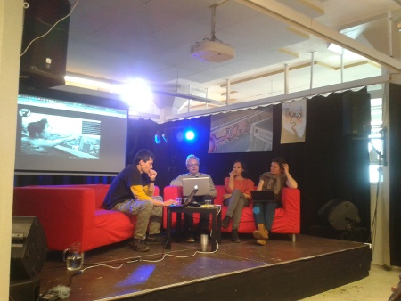
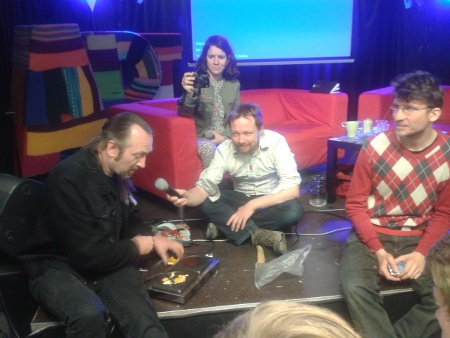
Raquel Rennó compartilhou as imagens do Flickr da Paula, e as abaixo, feitas por ela durante o Pixelache 2013.
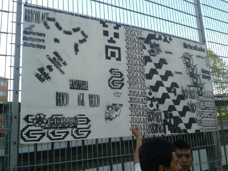
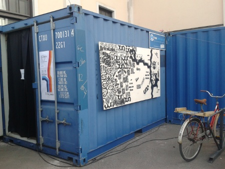
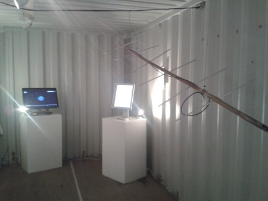
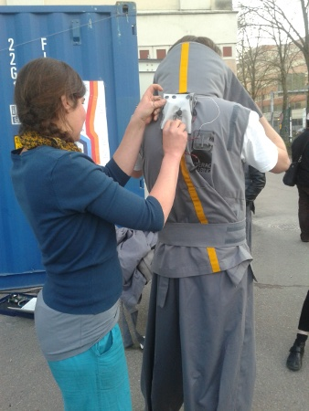
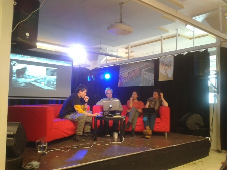
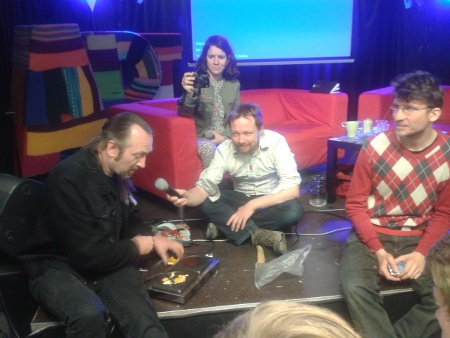
Em 2009 aconteceu atribuladamente o I Fórum de Mídias Livres. Como o MutGamb é um ponto de mídia livre, na época tínhamos direito a uma passagem para Vitória (paga pelo MINC, mas que nunca chegou) - e não foi só a nossa como de outrxs aliadxs. Ou melhor, muitas passagens chegaram sim, mas com a data retrógrada de embarque (horas ou dia no passado). Algunxs chegaram a brincar, dizendo que o MINC enviaria um Delorean. Mas não enviou.
Duas edições depois, nos dias 27 e 28 desse mês, Porto Alegre sediou junto ao Fórum Social Temático o 3º Fórum de Mídia Livre (até o momento que tentei linkar a url o site estava fora do ar, erro 509).
A grande pergunta é: depois de uma gestão devastadora, em que o MINC não existiu, ainda faz sentido pensar em pontos de Mídia Livre, ou mídia livre transmutou um conceito? Ainda cabe vislumbrar as diretrizes que foram rabiscadas (e lembradas pelo Fabbri num crosspost) na Carta de Mídias Livres, em 2010:
1) Uso de licenças livres para os conteúdos produzidos:
Como resgatar essa diretriz com a criminalização do compartilhamento e do posicionamento oficial contra o compartilhamento como premissa? Como raquear o Ministério?
2) Uso de ferramentas livres para a produção de conteúdo:leia mais >>
Nos próximos seis meses (de janeiro a julho de 2012) pretendo usar esse blog como forma de acompanhamento e documentação do que acontece na lista da MetaReciclagem e fora dela (nas redes amigas e nos projetos emergentes que surgem tagueados como #metarec). A ideia surgiu no ano passado, quando recebemos o "Prêmio de Mídia Livre Atrasado" e foi submetida como proposta ao MutGamb. Era uma necessidade que sentia desde 2009, quando Felipe Fonseca me convidou para mexer no wiki que era o Mutirão da Gambiarra, antes de ser um núcleo editorial colaborativo.leia mais >>
 O objetivo do encontro era decidir sobre planos futuros, metodologia de trabalho dos diferentes projetos e definir equipes e responsabilidades.
O objetivo do encontro era decidir sobre planos futuros, metodologia de trabalho dos diferentes projetos e definir equipes e responsabilidades.
 Em breve publicaremos por aqui as decisões tomadas, assim como mais informações sobre projetos atuais e futuros. Vem bastante novidade por aí...
Em breve publicaremos por aqui as decisões tomadas, assim como mais informações sobre projetos atuais e futuros. Vem bastante novidade por aí... Mutirão da Gambiarra foi idealizado pela MetaReciclagem

Apoio:


Assine Mutirão da Gambiarra por RSS